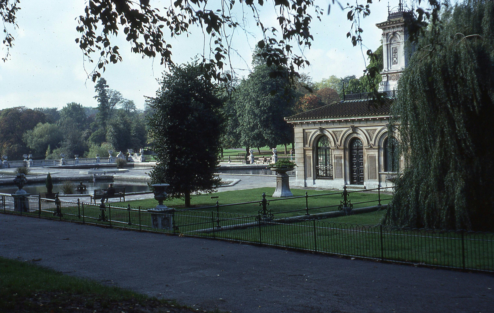

Home to iconic landmarks such as the Houses of Parliament, Big Ben, Westminster Abbey, and Buckingham Palace, Westminster is at the heart of London's political and royal history. Visitors can explore the bustling streets, visit museums like the Churchill War Rooms, and stroll along the Thames River.

LONDON
Covent Garden
Nestled amidst majestic fjords, Bergen captivates with its colorful wooden houses of Bryggen and bustling Fish Market. The Fløibanen funicular provides panoramic views of the city and surrounding mountains.
LONDON
Soho
Famous for its nightlife, Soho is a lively district packed with bars, clubs, and theaters. During the day, visitors can explore its eclectic mix of shops, cafes, and restaurants, or visit landmarks like Chinatown and the West End theaters. Soho also has a rich history as London's entertainment and red-light district.
LONDON
South Bank
Running along the southern bank of the Thames River, South Bank is a cultural hotspot with attractions such as the Tate Modern, Shakespeare's Globe Theatre, and the London Eye. Visitors can stroll along the riverside promenade, enjoy street performers, and take in panoramic views of the city's skyline.